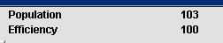

Colony's current population and efficiency is displayed here. The
population of a colony will increase if it has enough food and water
in its current stock; this is true even if it is not producing enough
of these resources and its food or water stock is diminishing.
Following quantities of food and water is needed per colonist:
Resource
Quantity needed per colonist
Food
6
Water
1

A colony's efficiency can drop with increasing population. Building
improvements like a theater or an arena can increase the efficiency.